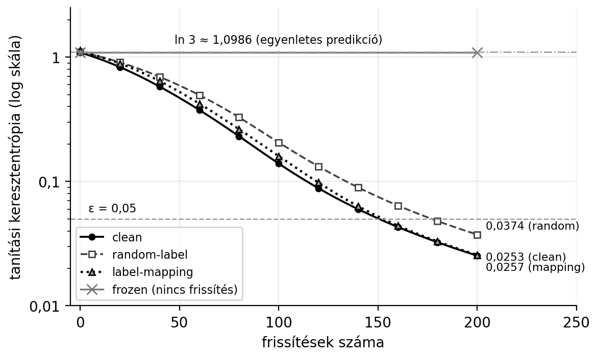

Ebben az alfejezetben olyan gyors kontrollteszteket építünk, amelyek a tanítási csővezeték nyilvánvaló hibáit még a hosszadalmas kísérlet előtt kimutatják. Feltételezzük a 11.3. Dataset és DataLoader a split után alfejezetben bevezetett adatbetöltő és split-konvenció, valamint a 12.2. Checkpoint és folytathatóság alfejezetben tárgyalt mentett paraméterállapot legalább fogalmi ismeretét; saját modellből indulunk ki, ezért a kísérlet nem függ külső checkpoint betöltésétől. A fő kérdés: ha egy képet tartalmazó mini-batchen, rögzített célon epoch alatt a cross-entropy nem csökken alá, hol keressük először a hibát — a modellben, az adatútban vagy az optimalizálóban?
Sanity check. Olyan kis költségű tesztelési eljárás, amely a teljes tanítási ciklus egy konkrét feltételezését ellenőrzi. Nem minősül kiértékelési protokollnak, mert a tanítási halmazt használja.
Tiny overfit. Rögzítsünk halmazt a GlyphLab tanító részéből (a függelék A. szakasza: 40.4. X. ellenőrző pont: önálló neurális modell és bizonyíték), ahol egy elem egy () kép és egy címke, kicsi, tipikusan . Három különböző alakot kell megkülönböztetni: egyetlen elem , a belőlük képzett batch ; a kimenet egyetlen elemre logit, a batchre , itt . A tanítás kritériuma:
A választását rögzíteni kell; a laborban .
Megjegyzés (a tiny overfit értelmezése). A tiny overfit diagnosztikai elvárás megfelelő kapacitású, külön beállított tesztmodellre és csővezetékre, nem szükséges feltétele minden jó modellnek: erős regularizáció, explicit kapacitáskorlát vagy ellentmondó, azonos inputokhoz tartozó címkék mellett egy jó modell sem feltétlenül memorizál.
Random labels. Ugyanaz a protokoll, de a
címkevektort véletlenül megkeverjük:
egy véletlen mintapermutációval, amelyet a kód
torch.randperm-mal állít elő ([D26]); a címkéket az
-től
függetlenül, azonos eloszlásból is újrahúzhatnánk. Ez a
randomizációs nullmodell; a keverés nem garantál teljes
függetlenséget: maradhatnak fixpontok, és ha a mintában egyetlen osztály
van, a vektor változatlan marad. Ezért a következtetést a nullmodell
várható viselkedésére mondjuk ki: a megkevert címke
várhatóan nem hordozza az eredeti feladat
szabályát, de az állítás nem minden egyes realizációra vonatkozik. A
sikeres túlillesztés azt mutatja, hogy a modell a kapacitásával a minta
belső szerkezetét memorizálja.
Frozen weights. A befagyasztott paraméter nem azonos
a matematikailag nulla gradienssel. Ha egy paraméternél
requires_grad=False, a .grad None
marad; ha az optimizernek átadott paraméterlista üres, a konstruktor
ValueError-t dob; ha a loss egyik inputja sem igényel
gradienst, a backward RuntimeError-t ad. Ezek
három külön megfigyelés; a teszt a None-t, a kivételt és a
számított nulla gradienst (ami érvényes, nem None tenzor)
külön kezeli. A grad_norm a None tagokat
kihagyja, ezért a befagyasztott modellnél
-t
ad; ez jelentési konvenció: azt jelzi, hogy nincs számított gradiens,
nem azt, hogy a matematikai gradiens nulla.
Label mapping. A képekhez tartozó célindexet
konzisztens, de a valódi osztályozási feladathoz képest hibás
leképezéssel állítjuk elő, például
(a laborban a [2, 0, 1] tenzorral indexelve:
,
,
).
A tanítási accuracy magas lehet, mert a modell a módosított célfüggvényt
illeszti, miközben a felhasználói szerződés sérül.
Gradiensnorma. Legyen a modell összes paramétere. A teljes gradiens euklideszi normája:
A gyakorlatban a paramétertenzoronkénti Frobenius-normák négyzetének összegéből vonunk gyököt; ez éppen a teljes paramétervektor euklideszi normája, és különbözik az átlagos vagy skaláronkénti normától.
A fejezet levezetési kötelezettsége az állítástípus pontos rögzítése.
Megfigyelés (a tiny-overfit sanity check bizonyító ereje). Legyen rögzített véges minta, a paraméterezett modell, és tegyük fel, hogy egy optimalizálási eljárás -ból indulva lépésben értéket ér el. A itt csak a végállapot indexe: a megfigyelés érvényességéhez az eljárásról nem kell többet tudni, mint hogy elérte -t. Ekkor:
Indoklás. Az (1) állítás a feltétel és a loss definíciójának közvetlen átfogalmazása: ha mértük, hogy a loss a küszöb alá csökkent, akkor a csővezeték ezen a mintán működött. Ez empirikus egzisztenciaállítás, nem elméleti konvergenciatétel.
A (2) tagadásához ellenpéldát konstruálunk a random-label kísérletből. Legyen a fenti randomizációs nullmodell szerint megkevert címke; a permutáció nem garantál teljes függetlenséget, de várhatóan megszünteti az és a címke közötti kapcsolatot, ezért várhatóan nem hordozza az eredeti feladat szabályát. Ha a modell -n ugyanúgy eléri és értéket, akkor a tiny-overfit kritérium teljesül. Ha a modell predikciója és egy független tesztminta címkéje független, akkor a várható pontosság , ahol a teszt osztályarányai; a nullmodell várható értelmében tehát a tanult leképezés nem hordoz a feladatról információt, és ez az állítás nem minden realizációra vonatkozik. A sikeres tiny overfit tehát még azzal együtt sem zárja ki, hogy a modell a minta véletlen struktúráját memorizálta, és nem bizonyítja az általánosító képességet. Ez a gondolatmenet saját definíciókból és a random-label kísérlet szerkezetéből következik; nem tételként idézett szakirodalmi eredmény.
A gyakorlati következmény: a tiny overfit a hibafeltáró kapu, nem a generalizációs kapu. A generalizációra vonatkozó korlátokat a 8.1. Kockázat, mintavétel és baseline–8.3. Kapacitás, regularizálás és modellválasztás tárgyalja, és azok feltételei itt nem lépnek életbe.
Vegyünk mintát és osztályt, logitokkal
A softmax soronként, természetes logaritmussal: az első sor , a második . Az átlagos cross-entropy:
A logitokra vonatkozó gradiens az átlagos CE-re
ahol sorai és . Az első sor , a második ; az átlagolás ( szorzó) után a logitgradiens
a Frobenius-norma . (Ha a logitok egy biasos lineáris réteg kimenete, , akkor a két sor oszloponkénti összege, , a bias gradiense, ; bias nélküli rétegben ez a mennyiség nem értelmezhető. Ennek normája , de ez nem a logitgradiens normája.) A példa mutatja a két ellenőrzési pontot: minden sor összege nulla, és a target oszlopában negatív, a másik oszlopában pozitív a gradiens; ha valamelyik feltétel nem teljesül, a backward vagy a loss skálázása hibás.
Előfeltétel. Python 3.12 és a cnn-labor
csomag rögzített környezete (uv sync: NumPy 2.3.5, PyTorch
2.14.1+cpu; a közölt kimenetek a könyv ellenőrző környezetéből, NumPy
2.5.4 és PyTorch 2.15.0+cpu alatt készültek), CPU; a labor a szakasz
kódját használja, a szükséges csomagokat a laborcsomag rögzített
környezete biztosítja. Bemenet a GlyphLab
lab/data/images.npy, labels.npy és
metadata.csv fájlja; futtatás a lab/
könyvtárból: python sanity_check.py.
Munkakönyvtár: a GlyphLab lab/ könyvtára, ahol a
data/images.npy, data/labels.npy és
data/metadata.csv elérhető. Futtatás:
cd lab
python sanity_check.pyA kód teljes; a kimenet a rögzített környezetben futtatott érték
(Python 3.12.3, NumPy 2.5.4, PyTorch 2.15.0+cpu, CPU, 1 szál, seed
;
két futás kimenete ebben az azonos verziójú, egyszálas CPU-környezetben
bitazonos, ami nem keresztplatformos garancia). A seed és a
determinizmus viszonyát a [D02] foglalja össze. A run
epochs=200 paramétere 200 teljes-batch lépést jelent: mivel
a 16 kép egyetlen batch, ez 200 epoch. A run a
history listában rögzíti a loss-t: a 0. elem a frissítés
előtti érték, a
.
elem a
.
frissítés utáni érték; a chart ebből a listából veszi a 0., 10., 50. és
200. pontot. A jelentett gradiensnorma a tanítás után, a végleges
pontban számolt gradiensből származik (a ciklus után még egy
zero_grad és backward fut), nem az utolsó
lépés előtti értékből.
# lab/sanity_check.py — munkakönyvtár: lab/
import csv
import math
import numpy as np
import torch
import torch.nn as nn
torch.manual_seed(20261020)
EPS = 0.05 # a 12.3.2 tiny overfit kritériuma: L_train < EPS és A_train = 1
np.random.seed(20261020)
device = torch.device("cpu")
dtype = torch.float32
# --- Adatút a metadata index és split mezője alapján ---
images = np.load("data/images.npy").astype(np.float32)
labels = np.load("data/labels.npy").astype(np.int64)
with open("data/metadata.csv", newline="", encoding="utf-8") as f:
rows = list(csv.DictReader(f))
# A CSV sorszáma nem azonos a képtömb sorszámával: az index mező köt.
assert list(rows[0]) == ["index", "scene_id", "view_id", "label", "split",
"xmin", "ymin", "xmax", "ymax"], list(rows[0])
assert len(rows) == 360, len(rows)
assert [int(r["index"]) for r in rows] == list(range(len(rows)))
assert len(images) == len(labels) == len(rows), (images.shape, labels.shape)
# Scene-split invariáns: egy jelenet minden nézete ugyanabban a splitben van.
scene_splits = {}
for r in rows:
scene_splits.setdefault(r["scene_id"], set()).add(r["split"])
assert all(len(s) == 1 for s in scene_splits.values()), "szivárgó jelenet"
train_idx = np.array([int(r["index"]) for r in rows if r["split"] == "train"])
# 16 train kép, osztályonként legalább 5
chosen = []
for c in (0, 1, 2):
idx_c = train_idx[labels[train_idx] == c]
assert len(idx_c) >= 5, (c, len(idx_c))
chosen.extend(np.random.choice(idx_c, size=5, replace=False).tolist())
chosen = np.array(chosen, dtype=np.int64) # 15 minta; a 16. más train kép
extra = np.random.choice(np.setdiff1d(train_idx, chosen), size=1, replace=False)
chosen = np.concatenate([chosen, extra])
assert len(set(chosen.tolist())) == 16
x = torch.tensor(images[chosen], dtype=dtype, device=device) # (16,1,24,24)
y = torch.tensor(labels[chosen], dtype=torch.int64, device=device) # (16,)
class TinyCNN(nn.Module):
def __init__(self):
super().__init__()
self.conv = nn.Conv2d(1, 8, 3, padding=1)
self.pool = nn.MaxPool2d(2)
self.fc = nn.Linear(8 * 12 * 12, 3)
def forward(self, x):
z = self.pool(torch.relu(self.conv(x)))
return self.fc(z.flatten(1))
def grad_norm(model):
sq = 0.0
for p in model.parameters():
if p.grad is not None:
sq += float((p.grad.detach() ** 2).sum().item())
return math.sqrt(sq)
def run(model, x, y, epochs=200, lr=1e-3):
params = [p for p in model.parameters() if p.requires_grad]
opt = torch.optim.Adam(params, lr=lr) if params else None
loss_fn = nn.CrossEntropyLoss()
# history[k] a k. frissítés utáni loss; history[0] a frissítés előtti érték.
history = []
with torch.no_grad():
history.append(float(loss_fn(model(x), y).item()))
if opt is not None:
for _ in range(epochs):
opt.zero_grad()
loss = loss_fn(model(x), y)
loss.backward()
opt.step()
with torch.no_grad():
history.append(float(loss_fn(model(x), y).item()))
# A jelentett gradiens a végleges theta_T pontban értendő.
opt.zero_grad()
loss_fn(model(x), y).backward()
with torch.no_grad():
acc = (model(x).argmax(1) == y).float().mean().item()
final = float(loss_fn(model(x), y).item())
return final, acc, grad_norm(model), history
# 1) clean tiny overfit
m = TinyCNN().to(device)
l1, a1, g1, h1 = run(m, x, y)
print(f"[clean tiny] loss={l1:.4f} acc={a1:.3f} grad_norm={g1:.4f}")
print("[clean tiny curve]", [(e, round(h1[e], 4)) for e in (0, 10, 50, 200)])
assert l1 < EPS and a1 == 1.0
# 2) random labels
perm = torch.randperm(y.numel())
y_rand = y[perm].clone()
m2 = TinyCNN().to(device)
l2, a2, g2, _ = run(m2, x, y_rand)
print(f"[random label] loss={l2:.4f} acc={a2:.3f} grad_norm={g2:.4f}")
assert l2 < EPS and a2 == 1.0
# 3) frozen weights
m3 = TinyCNN().to(device)
for p in m3.parameters():
p.requires_grad_(False)
l3, a3, g3, _ = run(m3, x, y) # nincs trainable paraméter; a tanítási ciklus nem fut
print(f"[frozen] loss={l3:.4f} acc={a3:.3f} grad_norm={g3:.4f}")
assert l3 > 1.0 and g3 == 0.0
# 4) cyclic label mapping
y_bad = torch.tensor([2, 0, 1], dtype=torch.int64)[y].to(device)
m4 = TinyCNN().to(device)
l4, a4, g4, _ = run(m4, x, y_bad)
print(f"[label mapping] loss={l4:.4f} acc={a4:.3f} grad_norm={g4:.4f}")
assert l4 < EPS and a4 == 1.0Futtatott kimenet (Python 3.12.3, NumPy 2.5.4, PyTorch 2.15.0+cpu, CPU, 1 szál, seed ; két futás kimenete ebben az azonos verziójú, egyszálas CPU-környezetben bitazonos, ami nem keresztplatformos garancia):
[clean tiny] loss=0.0253 acc=1.000 grad_norm=0.0566
[clean tiny curve] [(0, 1.0915), (10, 0.9644), (50, 0.4709), (200, 0.0253)]
[random label] loss=0.0374 acc=1.000 grad_norm=0.0718
[frozen] loss=1.0938 acc=0.438 grad_norm=0.0000
[label mapping] loss=0.0257 acc=1.000 grad_norm=0.0570
Értelmezés. A clean és a random-label kísérlet egyaránt
alá viszi a loss-t (a futtatásban
,
illetve
);
ezért a csővezeték gradiensáramlása működik, de a random-label siker
jelzi, hogy a modell kapacitása elegendő a minta memorizálásához. Az
ábra clean-görbéjének négy pontja ugyanebből a futásból, a
history listából származik, ezért a rögzített kóddal
reprodukálható. A frozen esetben nincs trainable paraméter, ezért az
optimalizáló None, a tanítási ciklus nem fut, és a loss az
inicializált modell értékén marad (a futtatásban
,
accuracy
);
a jelentett grad_norm a None gradiensű
paramétereket kihagyva
,
ami jelentési konvenció, nem matematikai nulla gradiens. A
nem a
konstans, mert a háló kimenete a 16 mintán nem pontosan egyenletes, és a
loss a véletlen inicializációtól függ. A label-mapping eset train
accuracy-ja is
,
ami azt mutatja, hogy a cél belső konzisztenciája nem helyettesíti a
felhasználói cél ellenőrzését.
F1 — Fogalmi; nehézség 1. Különböztesse meg a tiny overfit és a random-label sanity check által ellenőrzött hibatípusok körét. Adjon egy-egy példát arra a hibára, amelyet az egyik megtalál, a másik viszont nem feltétlenül.
F2 — Levezetési; nehézség 2. Vezesse le a fenti kézi
példa
alakját, és bizonyítsa be, hogy minden sorában a komponensek összege
nulla. Mutassa meg, hogy ha a modell minden paraméterére
requires_grad=False, akkor az autograd nem számít
gradienset a paraméterekre (p.grad is None), ezért a
grad_norm konvenciója szerint
adódik — és magyarázza meg, miért nem állítható, hogy a matematikai
gradiens nulla.
F3 — Implementációs; nehézség 2. Írjon egy
grad_norm függvényt, amely a csatolt TinyCNN
modellen visszaadja a teljes gradiensvektor euklideszi normáját, azaz a
paramétergradiensek négyzetösszegének négyzetgyökét (nem a
gradienskoordináták négyzetgyökeinek összegét), és tesztelje egy
mesterséges, ismert p.grad tenzorokkal rendelkező
nn.Linear(2,1) modellen. Adja meg a pontos várt
kimenetet.
F4 — Hibakeresési; nehézség 2. A hallgató a következő hibás kódrészletet írta:
model = TinyCNN()
param_list = [torch.randn(4, 4, requires_grad=True)]
opt = torch.optim.Adam(param_list, lr=1e-3)
# ...
loss = loss_fn(model(x), y)
loss.backward()
opt.step()A loss epoch alatt sem csökken. Lokalizálja a hibát, írja le a következményét, javítsa, és adja meg, milyen ellenőrzéssel igazolod a javítást.
F5 — Kísérleti/transzfer; nehézség 3. Tervezzen sanity check protokollt egy méretű, háromosztályos, színes képadathoz, ahol egy három konvolúciós rétegből álló CNN-t és -es batch méretet használnál. Adja meg: a tiny minta méretét, az epochszámot, a küszöböt, a baseline-t, a gradiensnorma ellenőrzést, és foglald össze, mit következtethetsz a sikeres tiny overfitből az adott adatra. A beadandó terv kötelező elemei: hipotézis, a változó tényező, kontroll (baseline), metrika és megfigyelési egység, a seedek száma és konkrét értékei, számszerű döntési szabály, valamint erőforráskeret.
F1. A tiny overfit a csővezeték end-to-end működését
ellenőrzi egy tanulható, konzisztens célon: forward, loss, backward és
paraméterfrissítés. Olyan hibát jelez, amely a loss csökkenését
megakadályozza: rossz tenzoralak, a számítási gráf megszakítása (például
detach), az optimizer nem a modell paramétereit kapja,
rossz helyen lévő softmax vagy hibás label-dtype. A random-label teszt
ugyanezt a csővezetéket futtatja véletlen címkéken, ezért a csővezeték
ugyanazon hibáit elvileg szintén kimutatja; a többlete a kapacitás és a
memorizálás próbája. Ha a modell a véletlen címkéken is eléri a
küszöböt, az azt mutatja, hogy a modell elegendő kapacitású a 16 minta
memorizálásához, és a csővezeték ezen a mintán működött; nem bizonyítja,
hogy a csővezeték minden szempontból helyes, és nem bizonyít
általánosítást. Az aszimmetria: egy túl kicsi modell a clean tiny
halmazon még sikeres lehet, ha a valódi szabály egyszerű, a random-label
teszten viszont elbukik, mert a véletlen címkékhez nincs egyszerű
szabály; így a random-label a kapacitáskorlátot élesebben mutatja.
Fordított irányban nincs ilyen tiszta példa: mivel a random-label
ugyanazt a csővezetéket használja, a csővezeték hibája rendszerint
mindkét teszten megjelenik, a clean tiny overfit elsősorban az olcsóbb
első kapu. Címkehibát (például eltolt osztályindexet) egyik teszt sem
feltétlenül jelez, mert mindkettő a megadott célokra optimalizál; erre a
label-mapping teszt való.
F2. A softmax definíciója soronként . A cross-entropy egyetlen mintára
ezért a logitra vonatkozó parciális derivált
Az átlagolás miatt
,
ahol
sorai one-hot vektorok; a kézi példában ez a
mátrixot adja, amelynek sorai
és
.
Minden sorban
,
tehát a sorösszeg nulla. A paraméterre való láncszabály miatt
a logitgradiens és a réteg Jacobi-mátrixának szorzata, ami általában nem
nulla. Ha minden paraméterre requires_grad=False, akkor az
autograd nem épít gradienst ezekre a tenzorokra, tehát
p.grad is None minden paraméternél; a
grad_norm a None tagokat kihagyja, ezért
-t
ad. Ez jelentési konvenció, nem a matematikai gradiens eltűnése.
F3. Egy lehetséges megoldás:
import torch, math
import torch.nn as nn
def grad_norm(model):
sq = 0.0
for p in model.parameters():
if p.grad is not None:
sq += float((p.grad ** 2).sum().item())
return math.sqrt(sq)
lin = nn.Linear(2, 1, bias=False)
lin.weight.grad = torch.tensor([[3.0, 4.0]]) # mesterséges feltöltés
print(f"{grad_norm(lin):.4f}") # 5.0000Ellenőrzés: a gradiensnorma a négyzetösszeg gyöke,
,
nem
;
a bias=False miatt a modellnek nincs bias paramétere, ezért
bias gradiensről itt nem beszélhetünk, a feltételes ág pedig helyesen
kezeli a None-t is. Szélsőeset: ha minden
p.grad is None, a függvény a None tagokat
kihagyva
-t
ad; ez a jelentési konvenció a frozen diagnózis alapja, és nem azt
állítja, hogy a matematikai gradiens nulla.
F4. A hiba az, hogy az optimizer a modell
paraméterei helyett egy független param_list listát kap.
Következmény: a loss.backward() a modell paraméterein
gradienset hoz létre, de az optimizer paramétercsoportjaiban nem a
modell paraméterei szerepelnek; a param_list elemein
viszont nincs gradiens (grad is None), ezért az Adam
([D06]) ezeket kihagyja. Nettó hatás: egyetlen paraméter sem frissül, a
modell súlyai változatlanok maradnak, ezért a loss nem csökken. Javítás:
opt = torch.optim.Adam(model.parameters(), lr=1e-3).
Ellenőrzés: a javított kódban a modell paraméterei két egymást követő
lépés között megváltoznak (például a lépés előtti és utáni
state_dict torch.equal-lel összevetve), a
param_list elemei változatlanok maradnak, és a frissítés
utáni
ponton futtatott új backward után a
grad_norm(model) pozitív. A gradiensnormát tehát a backward
után kell mérni, nem a lépések előtti állapotból.
F5. Protokollterv. Kérdés: képes-e a három
konvolúciós rétegből álló CNN a megadott mini-batchet megtanulni?
Hipotézis: igen,
epoch alatt a training loss
alá csökken. Megfigyelési egység: egy kép. Adat: a saját
színes adat train részéből
képet választunk, osztályonként
-ot;
a val/test részt nem érintjük. A
-es
batch méret mellett ez két lépés epochonként (egy
-es
és egy
-os
részleges batch), így a részleges utolsó batch útja is tesztelt. A
baseline: konstans predikció, amelynek loss-ja
.
Változó tényező: a cél
(
és random-label), a paraméterfrissítés (aktív és frozen). Metrika: batch
cross-entropy, train accuracy, gradiensnorma. Számítási keret: CPU,
PyTorch 2.15.0+cpu, seed rögzítve. A
epoch
(
lépés) kiinduló büdzsé; nagyságrendje a
mintás labor
lépéses büdzséjével összevethető, és ha a görbe
epoch után még csökken, az epochszámot kell növelni, a küszöböt nem
lazítani. A
küszöb a 12.3.2. szakaszban rögzített egységes tiny-overfit
,
nem a modell általánosítási minőségének mértéke. Érvényességi korlát: a
sikeres tiny overfit csak a csővezeték működését igazolja az adott
képen; a tesztre vonatkozó állítást a záró kiértékelés után, külön
protokollal tehetünk. A random-label kísérletet ugyanezen a
képen, a frozen esetet a modell paramétereinek
requires_grad_(False) állításával futtatjuk; a
gradiensnormát minden esetben egy külön backward után, a
lépés utáni
ponton mérjük, és rögzítjük, melyik ponthoz tartozik. Az aktív és a
random-label változatban ez a backward működését jelzi; a frozen
változatban a None gradiensek miatt
adódik, ami jelentési konvenció, nem matematikai nulla gradiens.
Kötelező elemek kiegészítve. Seedek: 20261020, 20261021, 20261022. Döntési szabály: a sanity check akkor teljesül, ha mindhárom seeden a clean, a random-label és a label-mapping eset tanítási lossa 200 frissítés alatt alá esik, a frozen eseté pedig változatlan. Erőforrás: CPU, futásonként néhány másodperc.
A leggyakoribb hiba, hogy a sikeres tiny overfitet az általánosítás bizonyítékának tekintik, és a train accuracy értékéből a tesztpontosságra következtetnek. Ellenpélda: a random-label kísérletben a tanítási loss alá csökken és adódik (a futtatásban , illetve ), pedig a célok véletlenszerűek; független tesztmintán a várható pontosság , tehát nem . A tiny overfit tehát nem elégséges feltétele a megbízható modellnek, és a fenti megjegyzés szerint nem is szükséges feltétele minden jó modellnek.
Ellenőrizze, hogy a laborban (a) minden tensor float32
és int64 a megadott helyeken, (b) a label mapping tenzora
ugyanazon az eszközön van, mint a cél, (c) a
CrossEntropyLoss ([D07]) bemenete logit, nem softmax, (d) a
frozen esetben nincs trainable paraméter, ezért a tanítási ciklus nem
fut (backward a kimenetre nem hívható, mert az nem igényel
gradienst), és a loss az inicializált modell értékén marad. A korábbi
fogalmak közül idézd vissza: a 11.3. Dataset és
DataLoader a split után alfejezetben rögzített scene-split invariáns
biztosítja, hogy egy jelenet minden nézete ugyanabban a splitben legyen,
ezért a tiny minta minden eleme a train splitből származik, és ugyanazon
jelenet másik nézete sem kerülhet a val vagy a teszt splitbe; a labor
ezt a metadata alapján ellenőrzi; a 12.2. Checkpoint
és folytathatóság alfejezetben tanult
state_dict-fogalom alapján a
model.parameters() a modellhez kötött paramétereket adja
vissza, nem a mentett állapotot; a 8.3. Kapacitás,
regularizálás és modellválasztás alfejezetben tárgyalt adaptivitás
miatt a sanity check nem írhatja felül a teszt érintetlenségének
elvét.
A sanity check rövid, célzott kísérlet, amely a tanítási csővezeték feltételezéseit ellenőrzi. A tiny overfit kis batch-en azt mutatja meg, hogy a forward, loss, backward és optimizer együtt képes a loss-t csökkenteni. A random-label változat a kapacitást és a memorizálást teszteli, a frozen-változat a befagyasztás hatását (nincs trainable paraméter, ezért nincs frissítés), a label-mapping a célkonzisztenciát, a gradiensnorma a backward numerikus működését. A sikeres tiny overfit nem bizonyít általánosítást: a random-label ellenpélda szerint az alatti loss elérhető akkor is, ha a célhoz nem tartozik stabil szabály. Ezért a sanity check a kísérleti protokoll hibafeltáró kapuja, nem a végső modellértékelés.
A 12.4. III. ellenőrző pont: önállóan tanuló kis háló III. ellenőrző pont ezt a kontrolltesztet teljes, önállóan tanuló kis hálózatként kapcsolja össze: a sanity check után a validációval, checkpointtal és a rögzített tesztprotokollal együtt értékeljük a tanulási görbét.